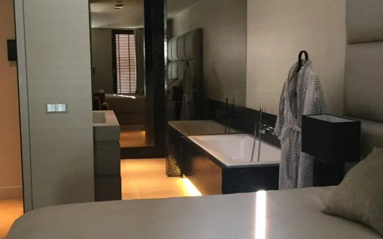
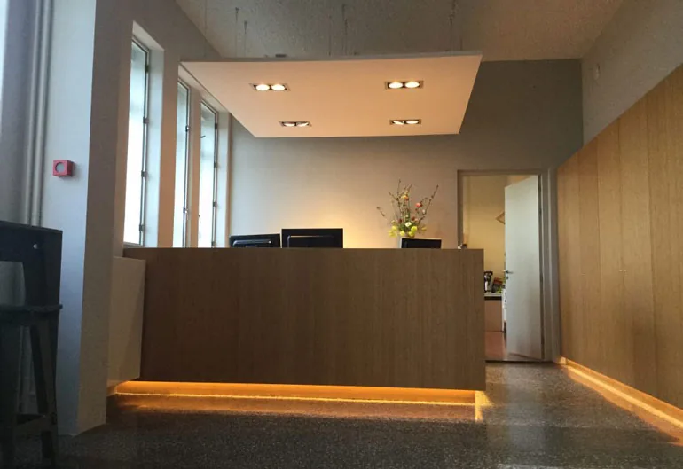
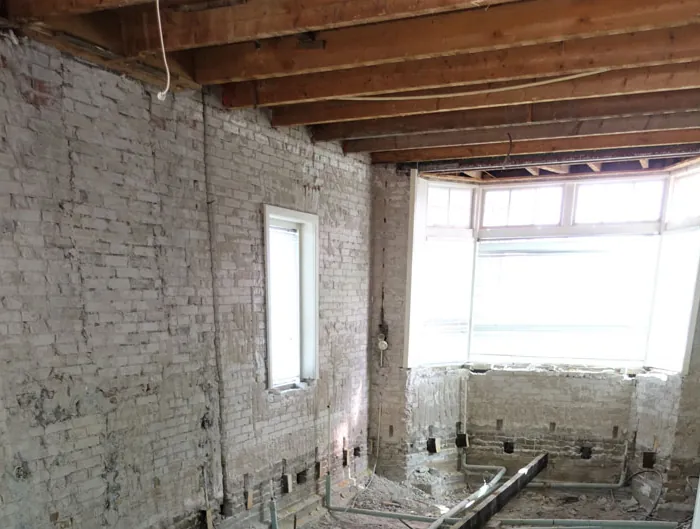
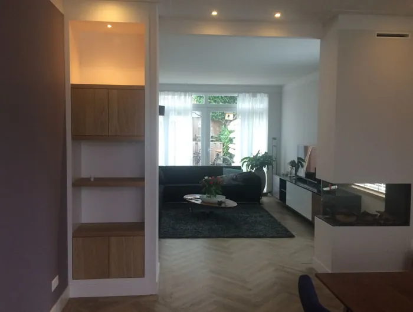
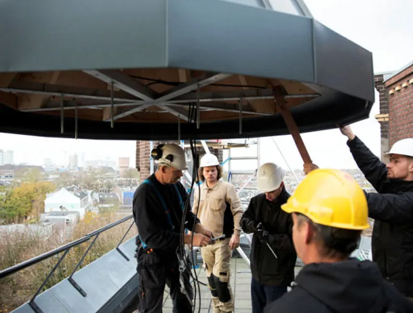
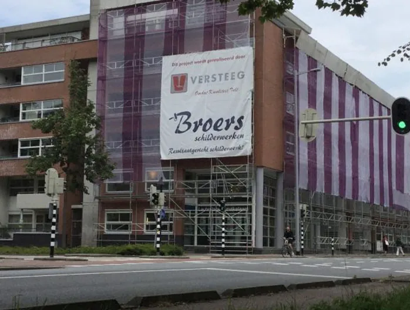
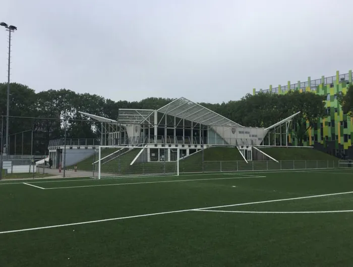
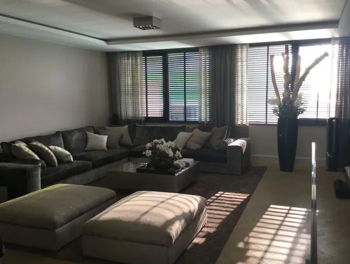
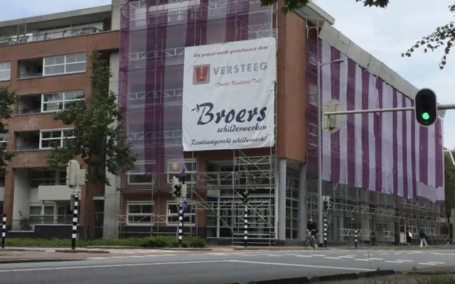

Bouwen, verbouwen en restaureren
Verbouw van badkamer, woning of kantoor, renovatie en restauratie, nieuwbouw, en advies en begeleiding van begin tot eind.
Verbouw · Renovatie en restauratie · Onderhoud · Schilderwerk · Nieuwbouw

Verbouwing receptie Vondelparc eiken balie en kastenwand, led in de plint
Precisiewerk waarbij het aankomt op details. Dat zit in ons DNA.
Liever bellen? Kantoortijden maandag tot en met vrijdag, 07:00 tot 16:00.
Eigen foto's van zes projecten: verbouwingen, nieuwbouw, houtrotherstel bij een VvE en torenspitsen in zink.






Twee vakgebieden onder één dak: bouwen en verbouwen, en schilderwerk en onderhoud.

Verbouw van badkamer, woning of kantoor, renovatie en restauratie, nieuwbouw, en advies en begeleiding van begin tot eind.

Binnen- en buitenschilderwerk, duurzaam houtrotherstel, onderhoud van kozijnen, ramen en deuren, wandafwerking en kleuradvies.
"Omdat kwaliteit telt, daar kan je wel vanuit gaan bij Versteeg en zijn mannen. Vakkundig, professioneel en altijd volgens afspraak. Bedankt mannen!"
"Deze aannemer levert topkwaliteit en is sociaal vaardig, verkoopt geen smoesjes en komt z'n afspraken na. Een zeldzaamheid is bouwend Nederland"
Van één kozijn tot een totale renovatie.